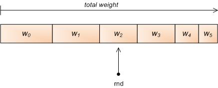

Update (02.09.2013): This article was written with Python 2.6 in mind; in Python 3.2 a new itertools.accumulate function was added; it provides a fast way to build an accumulated list and can be used for efficiently approaching this problem. See comments below for more information.
A problem I frequently run into is to randomly select an element from some kind of container, with the chances of each element to be selected not being equal, but defined by relative "weights" (or probabilities). This is called weighted random selection [1].
Simple "linear" approach
The following is a simple function to implement weighted random selection in Python. Given a list of weights, it returns an index randomly, according to these weights [2].
For example, given [2, 3, 5] it returns 0 (the index of the first element) with probability 0.2, 1 with probability 0.3 and 2 with probability 0.5. The weights need not sum up to anything in particular, and can actually be arbitrary Python floating point numbers.
import random
def weighted_choice(weights):
totals = []
running_total = 0
for w in weights:
running_total += w
totals.append(running_total)
rnd = random.random() * running_total
for i, total in enumerate(totals):
if rnd < total:
return i
Binary search
Note that the loop in the end of the function is simply looking for a place to insert rnd in a sorted list. Therefore, it can be sped up by employing binary search. Python comes with one built-in, just use the bisect module:
import random
import bisect
def weighted_choice_b(weights):
totals = []
running_total = 0
for w in weights:
running_total += w
totals.append(running_total)
rnd = random.random() * running_total
return bisect.bisect_right(totals, rnd)
Functionally, the two are similar, but the second version is faster. For short lists (2-element long) the difference is ~10%, and for long lists (1000 elements) it gets to ~30%.
Giving up the temporary list
It turns out that the temporary totals list isn't required at all. Employing some ingenuity, we can keep track of where we are in the list of weights by subtracting the current weight from the total:
def weighted_choice_sub(weights):
rnd = random.random() * sum(weights)
for i, w in enumerate(weights):
rnd -= w
if rnd < 0:
return i
This method is about twice as fast as the binary-search technique, although it has the same complexity overall. Building the temporary list of totals turns out to be a major part of the function's runtime.
This approach has another interesting property. If we manage to sort the weights in descending order before passing them to weighted_choice_sub, it will run even faster, since the random call returns a uniformly distributed value and larger chunks of the total weight will be skipped in the beginning.
Indeed, when pre-sorted the runtime is further reduced by about 20%.
King of the hill
All the methods shown so far use the same technique - generate a random number between 0 and the sum of the weights, and find out into which "slice" it falls. Sometimes it's also called the "roulette method".
There is a different approach however:
def weighted_choice_king(weights):
total = 0
winner = 0
for i, w in enumerate(weights):
total += w
if random.random() * total < w:
winner = i
return winner
An interesting property of this algorithm is that you don't need to know the amount of weights in advance in order to use it - so it could be used on some kind of stream.
Cool as this method is, it's much slower than the others. I suspect this has something to do with Python's random module not being too speedy, but it's a fact. Even the simple linear approach is ~25% faster on long lists.
Preprocessing
In some cases you may want to select many random objects from the same weight distribution. In these cases, the totals list of weights can be precomputed and the binary-search approach will be very fast for just selecting the numbers. Something like this can be used:
class WeightedRandomGenerator(object):
def __init__(self, weights):
self.totals = []
running_total = 0
for w in weights:
running_total += w
self.totals.append(running_total)
def next(self):
rnd = random.random() * self.totals[-1]
return bisect.bisect_right(self.totals, rnd)
def __call__(self):
return self.next()
As expected, for long lists this approach is about 100 times faster than calling weighted_random all the time. This is hardly a fair comparison, of course, but still a useful one to keep in mind when programming.
Conclusion
Here's a graph comparing the performance of the various methods presented:
The subtraction method is the fastest when you need one-off selections with different weights. If you can manage to supply a pre-sorted weights list, all the better - you'll have a nice performance gain.
However, if you need to generate many numbers from the same set of weights, it definitely pays to pre-compute the table of cumulative totals and then only use binary search for each call (the wrg method). This is by far the fastest approach.
Note: after the initial posting on 22.01, this article went through a major revision on 25.01, incorporating information provided in the comments as well as other methods and comparisons.

| [1] | Or weighted random choice. If you read about this topic online you'll find that there's selection with and without replacement. This is irrelevant for this post since I'm only talking about selecting a single element, not a bunch at a time. |
| [2] | There are many variations on this theme. Some find it more useful to have a list of (object, weight) pairs, or a dict mapping objects to weights. The method I present is the most general, and can be readily re-used or modified for different representations of objects and weights. |